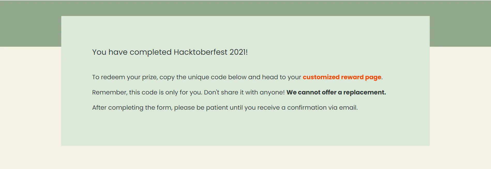
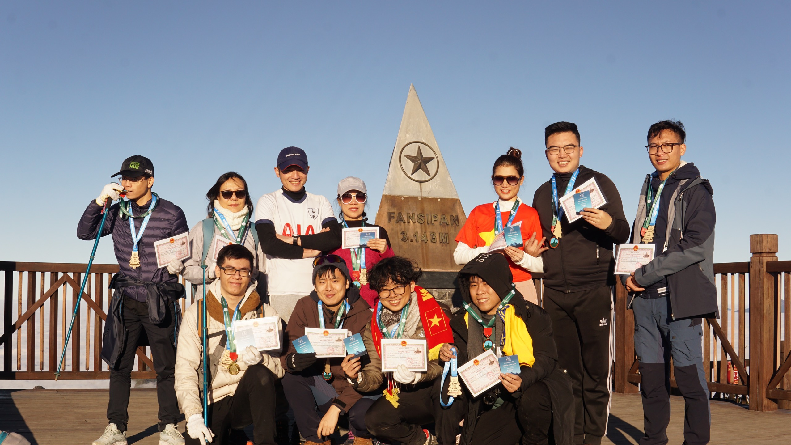
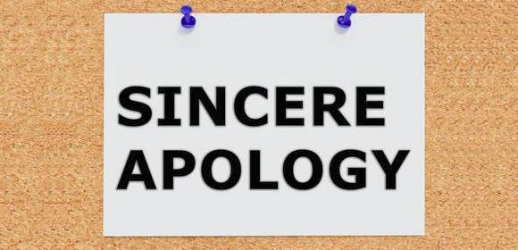

My 2021 Wrapped
Dec 31, 2021
What's good? What's bad? And what's the message for myself in the next year.
What have I achieved in 2021?
To be honest, none are such special compared to my friends. However, in 2021 I've pushed myself to try many new things, some are successful, some ain't. Here's what I've done:
My first hackathon: UAVS Hackatrix
I've been always doubting my ability to be able to contest in a hackathon, which leads to my scare of contesting. Thanks to Son Hoang, one of my friend have invited me to take part in UAVS Hackatrix. At first, I still concern about my skills but I accepted as I see many good teammate (because they might do the heavy-lifting for me 🤣). As soon as I participated in, I understand that I'm not that bad, and I could still convey good ideas for the discussion. Besides, I realized that a hackathons ain't just about programming, it's all about the team work of how we could transfer our idea into a real-life project.
My first time participated in Hacktoberfest
Hacktoberfest has been under my radar since the second year in university. However, until this year that I dedicated time and effort for the festival. Luckily, I could find some entry level tasks that I could start contribute right-away instead of having to deeply dive into the source. In addition, I received some cute gifts as a thank from Grafana. To know that how the open source organizations appreciate my little contribution, and to meet such awesome and talented people is my honor in this year 🥰.
Unfortunately the gifts haven't arrived due to the pandemic so I could only share my completion notice.
My first time to enjoy traveling, and to truly take care of myself
My family ain't into traveling, and I was not neither. To prepare for the trip, I had started planning before over 2 months: to buy warm clothes, as well as necessities and the most important thing: to prepare the mentality since I take the trip on my own, without my relatives nor my friends. Even the trip started with some small bad lucks, it turned out in such awesome way that I could never imagined. I had a chance to meet such nice people during the trekking tour to Mt. Fansipan. The weather contributed an enormous part in my trip as I could meet such beautiful sky and the sun in the middle of December in Sapa.
My Fansipan tour - the best memory of my 21.
Last but not least, I would want to express my sincere thank to one of my best friend - Quang. He invited my to join him with the exercise, to keep myself fit and healthy. I did also take a look and changed my daily meals, for my better health 😉. I started to pick up some complicated dish to practice cooking, which is fun now, but I have no believe in myself having this as a hobby.
Which failures have I met in 2021?
UAVS Hackatrix: Be both the Angel and the Demon
At first I didn't put high hopes on the contest. However, when I see the effort of my teammates, and to see how well I'm contributing for my team. I did believe that we could at least participate in the final round. However, it is what it is, and we failed. The result did satisfy my very first and naive goal, but never the latter ones
Have not completely given up on gaming
During the Hacktoberfest and the Hackatrix, I have no time left for the games that I could easily drop playing. However, right after having some free time, I picked up the habit of playing. Even I'm fully aware that it would consume a large amount of my time, it's still a bad hobby that I could not drop. Yet, I've successfully quit League, and planning to completely give up on spending hours after hours into video games.
To control my emotions, as well as handling pressures
2021 was a tough year for me - the final year of an undergraduate. Academic pressure was never easy overcome, yet this year is the worst of all three years. During those tough times, sometimes I could not control my words and started some conflicts with the ones around me. Therefore, here is my sincere apology to all of you.
This year also marked my first job in the industry. Even though I was luckily enough to join the most funny and solidary team, the work pressure still exists. Especially when I have just joined the testing project recently and have worked for over 12 hours per day. Exhaustion caused myself to hide my feelings away from my relatives, which leads to some misunderstandings that I'm facing right now.
What's the message?
Dear me of 2022,
Please drop playing games, since it took too much of your time!
Please be nice to people around you, they don't know your problems, but they tried their best to help you out! Sometimes it's better to share your emotions, no matter you are happy or depressed! Yet, stay strong and endurance.
Keep on the good work you have done during your 21. Be more open for the challenges and let your self have the chances to enjoy your life.